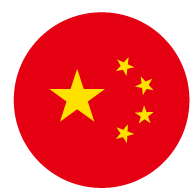

<ion-header>
  <ion-navbar>
    <ion-title>艦艇データ</ion-title>
  </ion-navbar>
</ion-header>
<ion-content padding class="home">
    <!--<table border="0" width="90%" class="table1">
        <tr>
        <td align="center"><br>ドイツ</td>
        <td align="center"><br>ソ連</td></tr>
        <tr>
        <td align="center"><br>日本</td>
        <td align="center"><br>アメリカ</td>
        </tr>
        <tr>
        <td align="center"><br>アジア</td>
        <td align="center"></td>
        </tr>
    </table>-->
    <!--アバターリスト-->
    <ion-list>
        <ion-list-header>艦艇の国家を選択</ion-list-header>
      <ion-item (click)="openGermanyPage()">
      <ion-avatar item-left>
        
      </ion-avatar>
      <h2>ドイツ</h2>
    </ion-item>

    <ion-item>
      <ion-avatar item-left>
        
      </ion-avatar>
      <h2>日本</h2>
    </ion-item>

    <ion-item>
      <ion-avatar item-left>
        
      </ion-avatar>
      <h2>ソ連</h2>
    </ion-item>

    <ion-item>
      <ion-avatar item-left>
        
      </ion-avatar>
      <h2>アジア</h2>
    </ion-item>
  </ion-list>
</ion-content>
